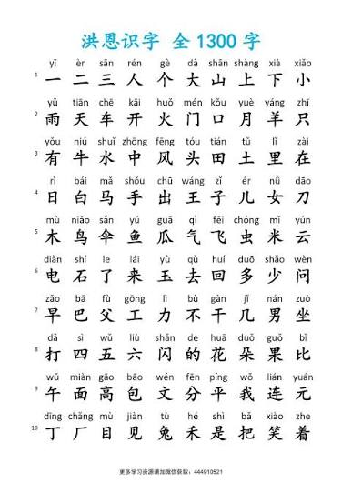

อักษรจีนคืออะไร

อักษรจีนเป็นระบบการเขียนประเภทอักษรภาพที่มีอายุเก่าแก่หลายพันปีและยังคงใช้งานมาจนถึงปัจจุบัน ตัวอักษรแต่ละตัวจะทำหน้าที่เป็นสัญลักษณ์แทนความหมายและแทนพยางค์หนึ่งพยางค์โดยตรง ไม่ได้เกิดจากการผสมพยัญชนะกับสระเพื่อสะกดตามเสียงอ่านเหมือนภาษาไทยหรือภาษาอังกฤษ รูปแบบของตัวอักษรมีวิวัฒนาการเริ่มต้นมาจากภาพวาดสิ่งรอบตัวในธรรมชาติ เช่น ภาพดวงอาทิตย์ ภูเขา หรือสัตว์ ก่อนจะค่อยๆ ปรับเปลี่ยนรูปทรงให้กลายเป็นเส้นขีดตรงและเป็นเหลี่ยมมุมตามการใช้พู่กันและปากกาในยุคต่อมาในยุคปัจจุบันอักษรจีนถูกแบ่งออกเป็นสองรูปแบบหลักตามพื้นที่ใช้งาน คือ อักษรจีนตัวย่อ ซึ่งรัฐบาลจีนพัฒนาขึ้นเพื่อลดจำนวนขีดลงให้เขียนและเรียนรู้ง่าย นิยมใช้ในจีนแผ่นดินใหญ่และสิงคโปร์ กับอักษรจีนตัวเต็ม ที่ยังคงรักษาโครงสร้างซับซ้อนแบบดั้งเดิมเอาไว้ นิยมใช้ในไต้หวัน ฮ่องกง และมาเก๊า เนื่องจากตัวอักษรจีนไม่สามารถอ่านออกเสียงได้จากการดูตัวคำเพียงอย่างเดียว จึงต้องมีระบบสัทอักษรหรือ "พินอิน" ที่ใช้ตัวอักษรโรมันร่วมกับเครื่องหมายวรรณยุกต์เข้ามาช่วยกำกับเสียงอ่าน นอกจากนี้ อักษรจีนยังเป็นรากฐานสำคัญที่ส่งอิทธิพลต่อระบบการเขียนของประเทศเพื่อนบ้าน เช่น อักษรคันจิในภาษาญี่ปุ่น รวมถึงเคยใช้ในเกาหลีและเวียดนามในอดีตอีกด้วย